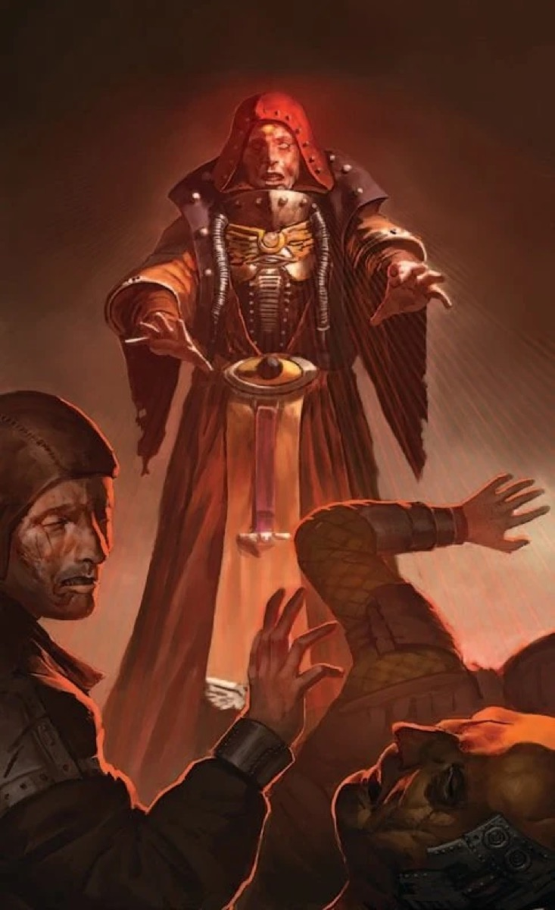

Navis Nobilite
| Navis Nobilite | |
|---|---|
| The Navigator houses | |
Seal of the Navis Nobilite: the three-fold eye of a Navigator in a wreath | |
| Type | Guild of noble houses; a mutant human sub-species |
| Origin | Before the Great Crusade; the earliest records are held in stasis vaults on Terra |
| Seat | Palace of the Navigators, Navigator's Quarter, Terra |
| Leader | The Paternova |
| Representation | The Paternoval Envoy, a seat among the High Lords of Terra |
| Houses | Thousands, of four broad kinds: Magisterial, Nomadic, Shrouded and Renegade |
| Distinguishing trait | The Warp Eye, a third eye set in the brow |
| Forces | Private household armies |
| Charter | The right to guide ships through the Warp, held by every house |
| Symbol | The wreathed three-fold eye |
The Navis Nobilite, the "Navigator Nobility", is the guild of noble houses whose members, the Navigators, pilot ships through the Warp. A Navigator is a human mutant with a third eye in the forehead, the Warp Eye, which lets him look into the Immaterium without being destroyed by it and to see the paths through its currents. No ship that can travel faster than light can cross the stars without one. Every vessel of the Imperial Navy, every ship of the Rogue Traders and every freighter that carries the Imperium's trade has at least one Navigator aboard, and a great ship may carry a whole cabal.[1]
The Navigator houses are some of the oldest and wealthiest families of the Imperium of Mankind. They are older than the Imperium itself, and the Navis Nobilite holds a charter of the Emperor that excuses it from many of the Imperium's laws. They are also feared. A Navigator is a mutant in a society that kills mutants, and the heredity that makes him valuable is a source of constant fear in the common people, who think of the Warp Eye as the gaze of something that is not wholly human. The houses live apart in great palaces, and the Navigator's Quarter on Terra is among the grandest and least visited districts of the Imperial capital.[1]
The power of the Navis Nobilite rests on a monopoly that no other body can break. The Imperium has tried to breed its own pilots, to build machines that can do the work and to bind the Navigators more closely to the state. It has failed in every case, and the houses have grown rich on the failure.[1]
History
[edit]Origins
[edit]Nothing is known with certainty of the origin of the Navigators. Tech-adepts have long argued that their gene came from experiments made in the Age of Technology, when Mankind first crossed the Warp, and that the first Navigators were bred or engineered to pilot the great ships of that age. Others hold that it arose by chance and was kept. The oldest records are in the stasis vaults beneath the mansions of the Navigator's Quarter on Terra, which no outsider has entered, and which some Inquisitors believe contain material to rival the oldest archives of the Imperium.[1]
During the Age of Strife the Navigators survived on a world in which the Warp storms made nearly all interstellar travel impossible. When the storms eased in the closing decades of the 30th millennium, they were already established on Terra and in a few other places as families of great age and some power. They had no need to join the Emperor's cause, and the Emperor needed them. The terms of the agreement, the Charter of the Navis Nobilite, are held in the archives of the guild, and the houses have never allowed them to be copied.[2]
The Great Crusade
[edit]
The Great Crusade was, among other things, a feat of navigation. The fleets of the Space Marine Legions and the Imperial Army went where no ship had gone for millennia, and none of it could have been done without the pilots of the Navis Nobilite. Had it been left to the older methods the Crusade would have taken thousands of years. As it was, it took two hundred. Each expeditionary fleet carried its own cabal of Navigators, and the admiral deferred to the Navigator in every matter of the Warp.[3]
Navigators were generous to the Crusade and careful to be paid. They took part in the fleets of the primarchs, and their houses invested in the Rogue Trader expeditions that went ahead of the main hosts. One of the oldest houses, House Achelieux, was given a task by the Emperor himself: the study of the strange artefact known as the Dark Glass. Others found that the new Crusade brought them more wealth than the whole history of their families.[2]
The Horus Heresy
[edit]The Heresy tested the houses. It is certain that some of them were turned by the Warmaster's emissaries, for Horus could not otherwise have moved his fleets with the speed he did. The records are fragmentary, and the Navis Nobilite has never published its own account. What is known is that the houses emerged from the Heresy with their power and reputation largely intact, which would seem to confirm how little the Imperium could do without them.[4]
In 007.M31 the Word Bearers raised a Warp storm of unparalleled size at the Battle of Calth, the Ruinstorm, which cut off Terra from most of the galaxy and made the Warp impassable for ships on any routes the Navigators knew. Navigators who tried to steer through it were blinded or driven mad. In some areas of space the ships of the Loyalists could not move at all, and others vanished without trace. When the storm eased, the survivors were able to reach Terra in time for the final war.[4]
After the Heresy
[edit]With the Emperor on the Golden Throne the light of the Astronomican became the lodestar by which the Navigators steered. The Astronomican is a beacon that shines in the Warp, and every Navigator is trained to find it first when he enters the Immaterium. That dependence on the Emperor's light has made the Navigators devout in spite of themselves. The houses are among the most orthodox of the Imperium's institutions.[1]
In the 36th millennium the Navigators were swept up in the Age of Apostasy. In the disorder of the Reign of Blood, local factions of the Ministorum burned Navigator holdings and executed Navigators as heretics. The High Lords of Terra, who could not afford to lose the Navigators, put an end to it, and the houses were confirmed in their immunity.[1]
The Era Indomitus
[edit]The opening of the Great Rift in 999.M41 was a disaster for the houses. The Rift and the darkness of the Noctis Aeterna, which put out the Astronomican for the greater part of the galaxy, left the Navigators blind in the Warp. Ships that entered the Immaterium were lost, and many that were already in it were never seen again. Those Navigators who guided fleets across the Rift in the first years of the Indomitus Crusade did so by methods that the houses have not described. The Astronomican has since returned in parts of the galaxy, and the Navigators are among its most fervent defenders. The houses have been demanding more from the Navy and the Crusade as the cost of lost vessels has risen.[5]
Organisation
[edit]The Great Houses
[edit]The Navis Nobilite is made up of thousands of houses, each a family of Navigators and their retainers. The greatest of them are rich beyond the reckoning of most Imperial officials. They control nearly all shipping through the Warp and have a say in almost every large venture of trade or war. Lesser houses owe fealty to greater ones, and groups of houses form trading cartels that compete for contracts. The houses are always at odds with one another, in the manner of rival merchant dynasties, and sometimes in open war.[1]
The houses fall into four kinds.
| Kind | Character |
|---|---|
| Magisterial | The oldest houses, descended from the first Navigator families, holding great estates in the Navigator's Quarter on Terra. Their bloodlines are well managed and the least subject to the mutations that afflict Navigators. |
| Nomadic | Houses that have given up their lands and live in fleets that wander the Imperium. They are said to be the most skilled of Navigators, and the least at ease on a planet. |
| Shrouded | Houses that suffered a loss or a shame and have fled to the margins of the Imperium. Their poverty has made them cunning, and their Warp Eyes are often unusually keen. |
| Renegade | Houses that have abandoned the traditions of the guild and tampered with their bloodlines, or that have been cast out for doing so. Many produce monsters. A few produce Navigators of new and terrible power. |
Novators and the Paternova
[edit]Each house is ruled by a Novator, a patriarch or matriarch who manages its affairs, arranges its marriages and keeps the family bloodline. Novators can speak to one another by a secure chamber called the Novator Cortex. Above them is the Paternova, the head of the whole Navis Nobilite, who lives in the Palace of the Navigators and never leaves it. The Paternova is chosen by a ritual of unusual cruelty. When one Paternova dies, the Heirs Apparent of the great houses undergo a transformation that makes them larger, stronger and more violent, and they fight until one remains. The survivor is changed beyond recognition and becomes the new Paternova, whose Warp Sense can strengthen the powers of every Navigator of his own house. In the interregnum between two Paternova, the powers of all other Navigators are weakened.[1]
The chief servant of the Paternova is the Paternoval Envoy, who commonly serves as one of the High Lords of Terra and represents the Navis Nobilite in the Senatorum Imperialis. The Envoy is the guild's voice before the Imperium and, in practice, its shield.
The Navigator Gene
[edit]
A Navigator is born with a recessive gene that produces the Warp Eye. The gene can be kept only by marriage within the houses, since breeding with ordinary humans destroys it. The houses guard their lines with care, using gene-scryers and the Emperor's Tarot to select matches. The need for purity has led to inbreeding, and many houses have seen their lines decay into madness and deformity. Others have tried to strengthen the gene by tampering with it, producing both great powers and horrible failures. In the dungeons of the larger palaces, it is said, the houses keep their deformed kin.[1]
A Navigator's powers grow with age, and so do his mutations. The Warp Eye, when opened, can see through the Immaterium and can strike down a man with its gaze. Many Navigators are physically changed by long exposure to the Warp and live their last decades in private chambers and sealed tabernacles aboard ship.
Practice and tradition
[edit]
A Navigator works in a sealed Navigator's chamber at the heart of a ship, attended by servants who guard against the sight of his Eye. He does not steer by sight in the usual sense. He opens the Warp Eye and reads the currents of the Immaterium, locating the beacon of the Astronomican and plotting a route around the storms. A mistake costs the ship, and a Navigator's reputation lives or dies on his record.
The houses settle some of their disputes by Navigator duels and others by trade wars, which have sunk entire fleets of freighters. They do not welcome outside interference, and the Paternova's agents are merciless with a house that endangers its fellows by treachery or excess. Navigators found guilty of heresy are normally hunted down by the houses themselves before the Inquisition can act. Occasionally the Ordos have destroyed whole houses, and carried the head of the family away in the Black Ships.[1]
A Navis Scion is a Navigator whose house has set him to act as diplomat, envoy and advisor in the courts of the Imperium. Scions are often selected for the absence of visible mutation and the grace of their speech, and many serve Rogue Traders and admirals as advisers.
Notable houses
[edit]- House Belisarius is one of the oldest of the Magisterial houses and has a long alliance with the Space Wolves. It provides the Chapter's fleet with its Navigators in return for a guard of Wolves, the Wolfblade, who serve its Celestarch.
- House Achelieux served in the Great Crusade and studied the Dark Glass at the Emperor's order.
- House Malaspina, a Shrouded house, is distrusted by the Space Marine Chapters, and none of the Chapters of the First or Second Foundings will carry its Navigators.
- House Nostromo, a Renegade house, has long been entwined with the Rogue Trader dynasty of Haarlock.
- Houses Granicus and MacPherson serve the Adeptus Astra Telepathica and provide Navigators for the Black Ships.
Relations with other institutions
[edit]- Imperial Navy
- The Navy needs the houses more than it likes to admit. Each ship is dependent on its Navigator, and the Navigator is not subject to the authority of the captain in matters of the Warp.
- Inquisition
- The Inquisition is one of the few bodies that can overrule the Navigators' charter and watches them closely. It acts with great care.
- Ecclesiarchy
- The Navigators have always been shunned by the common people, and the Ministorum is divided between respect and fear.
- Rogue Traders
- Navigators are the partners and the creditors of the Rogue Traders. The houses fund the largest expeditions and share in the profits.
- Adeptus Mechanicus
- The Mechanicus has long tried to build a machine to take the Navigator's place, and the Navigators have long tried to make sure it fails.
Timeline
[edit]| Date | Event |
|---|---|
| c. 797.M30[a] | The Navigator houses are established on Terra and in a few other places as the Warp storms of the Age of Strife ease. |
| c. 798.M30 | The Great Crusade begins, and each expeditionary fleet carries its own cabal of Navigators. |
| 005–014.M31 | During the Horus Heresy, the houses are tested, and some are turned by the Warmaster's emissaries. |
| 007.M31 | The Battle of Calth is followed by the Ruinstorm, a Warp storm that makes the Warp impassable on routes the Navigators know. |
| 014.M31 | The Emperor is interred on the Golden Throne, and the light of the Astronomican becomes the lodestar of the Navigators. |
| M35 | The Historia et Structura Re Navis Nobilite is compiled on Terra. |
| M36 | During the Age of Apostasy, local factions of the Ministorum burn Navigator holdings until the High Lords put an end to it. |
| 999.M41 | The opening of the Great Rift and the darkness of the Noctis Aeterna leave the Navigators blind in the Warp. |
| c. 001.M42[b] | The Navigators who guide fleets across the Rift do so by methods the houses have not described. |
| c. 012.M42[c] | The Astronomican returns in parts of the galaxy during the Indomitus Crusade, and the houses demand more from the Navy as the cost of lost vessels rises. |
See also
[edit]Notes
[edit]References
[edit]- ^ a b c d e f g h i j Historia et Structura Re Navis Nobilite (M35). Navis Nobilite, Terra.
- ^ a b Liber Primarchus (M32, revised M41). Administratum Archive, Terra.
- ^ Sindermann, Kyril (c. 004.M31). Remembrances of the 63rd Expedition. Remembrancer Order.
- ^ a b Chronicles of the Heresy (sealed). Logos Historica Verita, Terra.
- ^ Records of the Indomitus Crusade (ongoing). Office of the Lord Commander.